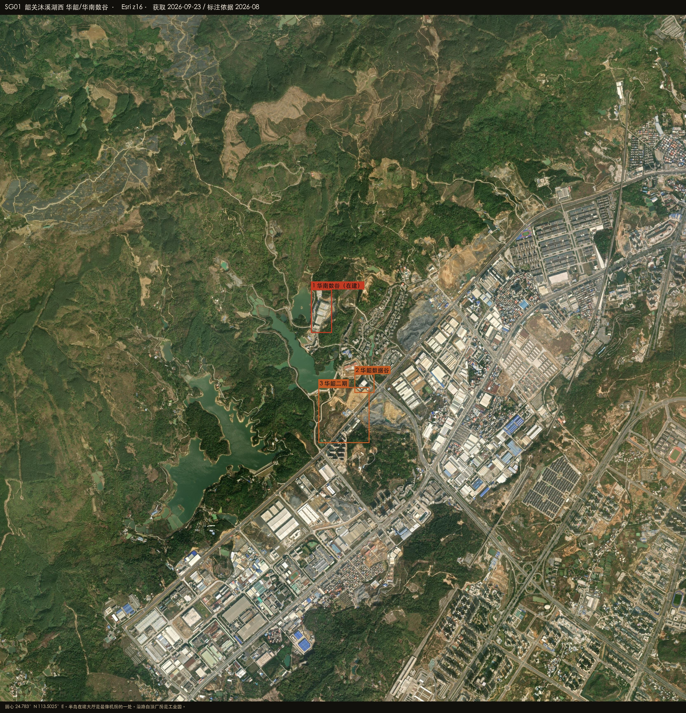
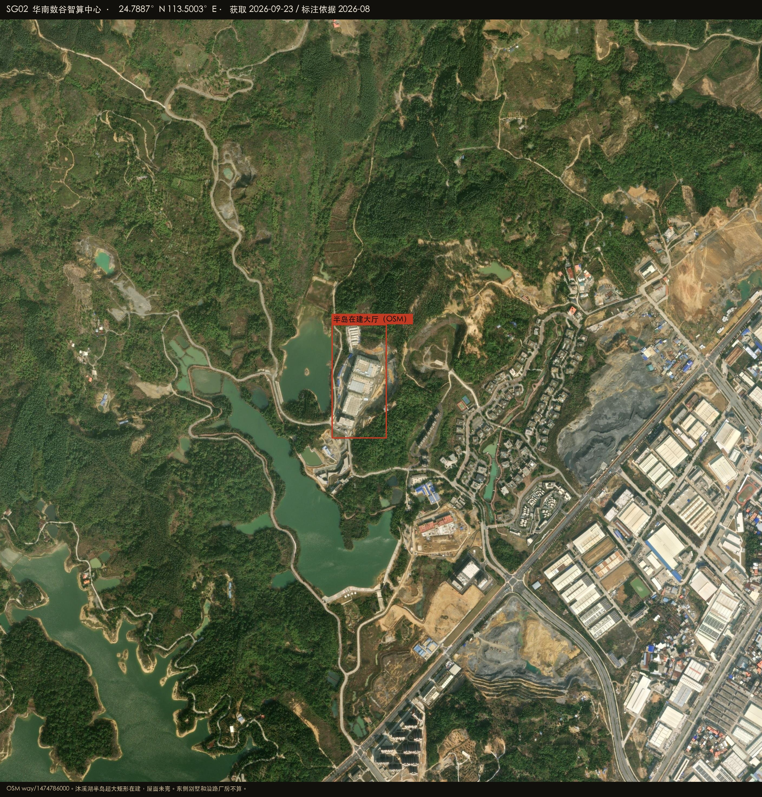
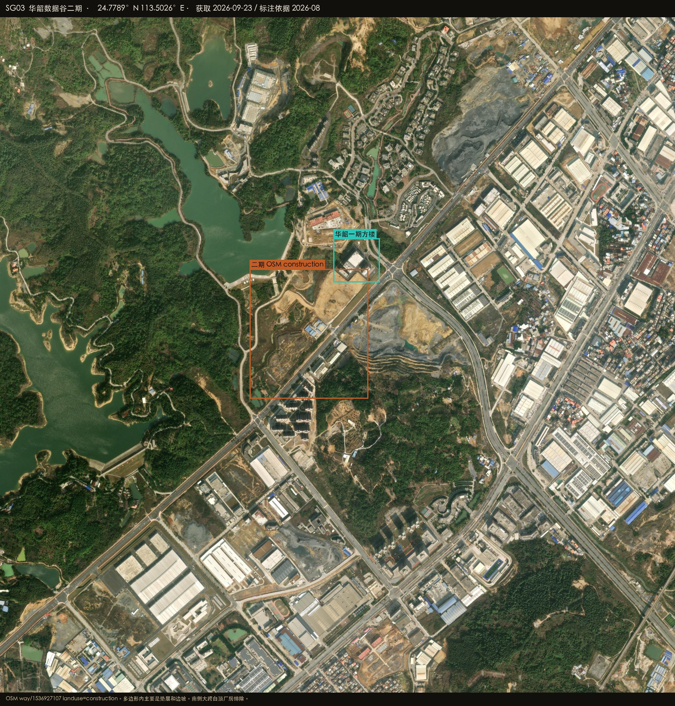

Datacenter Probe · 韶关
24.7830°N 113.5025°E · r = 50 km
Esri World Imagery · 2026-08-27
Satellite reconnaissance · Guangdong
韶关周边数据中心建设情况
韶关枢纽不在市政府。圆心取高新区西联、沐溪湖西的华韶—华南数谷组团。卫星上最像机房的是湖心半岛那栋在建超大矩形（OSM 华南数谷智算中心）。华韶一期是路口小地块，二期 OSM 标 construction、地面主要是垫层。沿路白顶大跨厂房是普通工业。城区粤北云只有 150 m 级多边形，没有大厅。

HERO · 沐溪湖西 · 半岛在建大厅
在建 / 高置信机房
已投运 / OSM 具名
候选 / 业主待核
排除或不像机房
底图 Esri World Imagery（WGS84）
SG-HUANAN · 半岛
OSM 具名。湖心半岛超大矩形在建，屋面未完。
中高 · 在建
SG-HUASHAO · 路口
OSM 约 200 m 地块。方楼 + 北侧在建，体量小。
中 · 小地块
SG-PHASE2 · 垫层
OSM construction。多边形内主要是垫层。
中 · 垫层
SG-YUEBEI · 城区
OSM 有名，150 m 级，立交旁看不见大厅。
低
24.7887°N 113.5003°E
华南数谷智算中心
沐溪湖半岛。OSM way/1474786000，24.7866–24.7907N 113.4992–113.5014E。
中高置信 · 在建大厅
- 超大矩形、脚手架、屋面未完，形态像机房而不是住宅
- 东侧山坡别墅不计
- 路口华韶一期是另一块约 200 m OSM 多边形
业主待核
在 Google 卫星图打开 ↗

PLATE SG02 · 华南数谷 · Esri z17
24.7789°N 113.5026°E
华韶数据谷二期
OSM way/1536927107 landuse=construction，24.7762–24.7815N 113.4999–113.5053E。
中 · 垫层 / OSM 在建
- 多边形内整平垫层和边坡，大厅尚未出
- 南侧大跨白顶厂房按普通工业排除
业主待核
在 Google 卫星图打开 ↗

PLATE SG03 · 二期 · 厂房排除
怎么判，什么不算
圆心在沐溪湖西园区，不在韶关市政府。职业中学那个 telecom=data_center 节点排除。
算作机房
- 半岛超大无内院矩形（在建）
- OSM 具名（华南数谷、华韶）须对照形态
明确排除
- 沿路白顶大跨厂房、采石场
- 山坡别墅、城区立交住宅
- 职业中学信息中心
在 Google 卫星图打开圆心 ↗